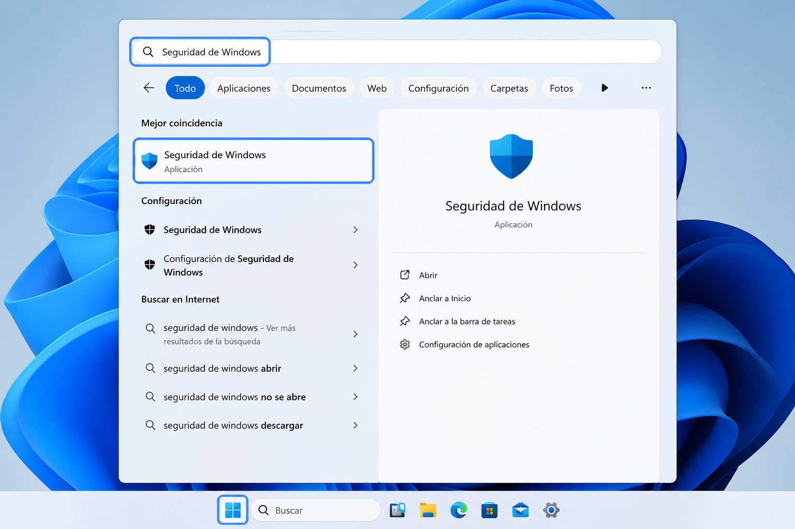
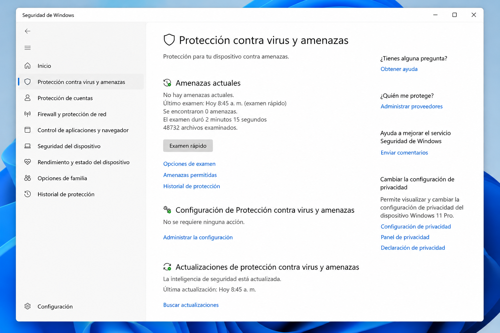
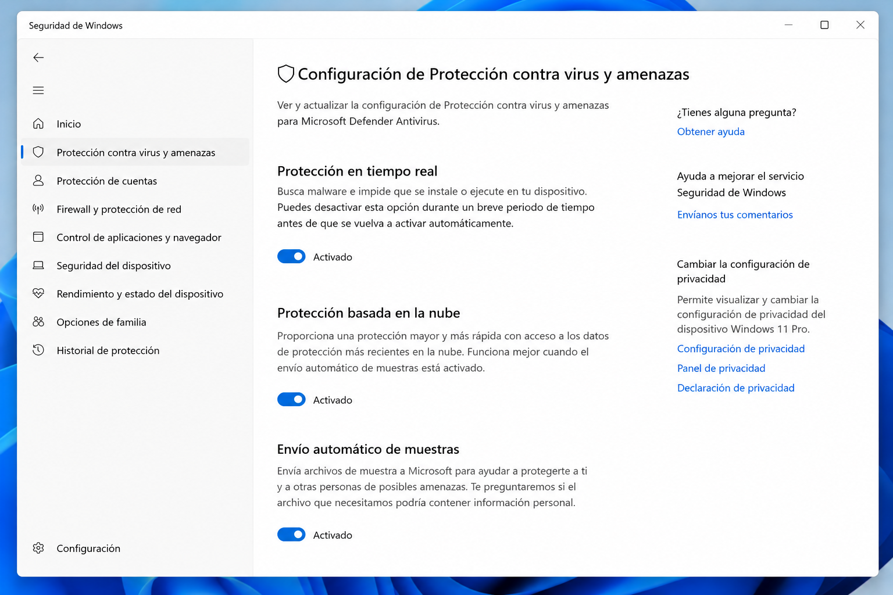
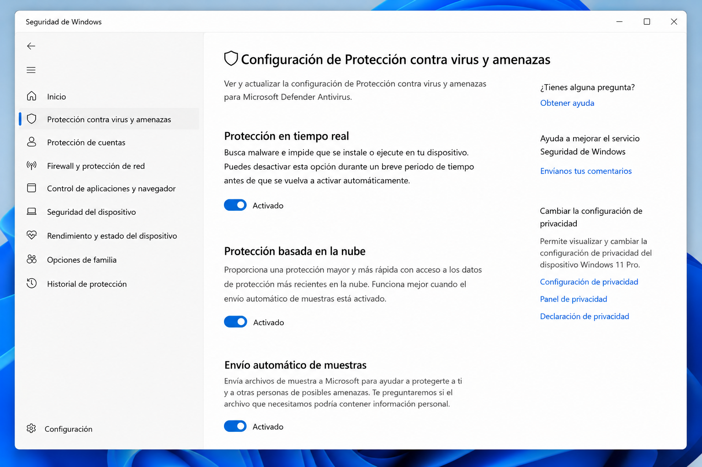
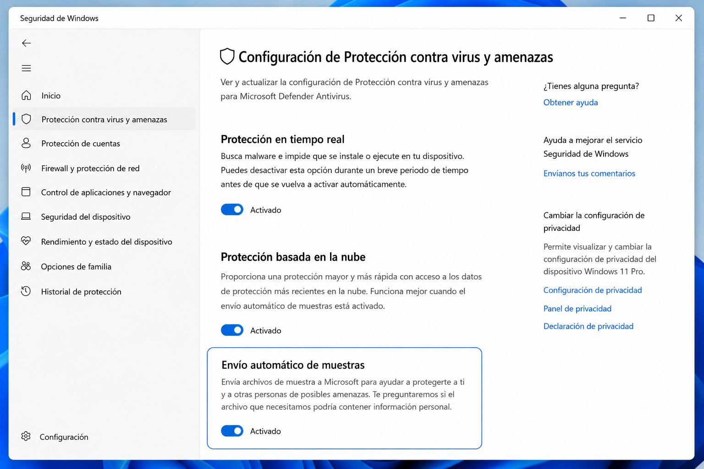
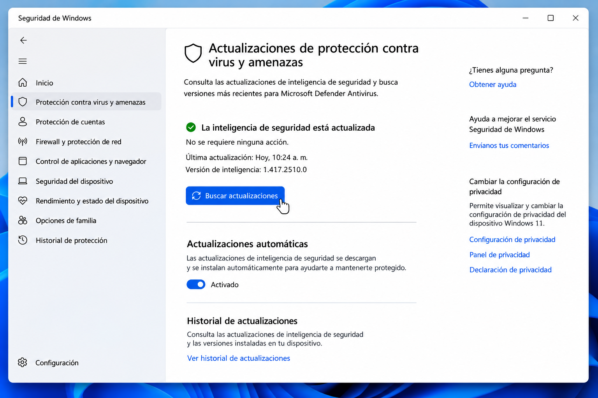

Video rápido
Mira cómo reforzar el escudo de Windows
En este Short te muestro cómo activar opciones avanzadas de seguridad en Windows 11 usando Microsoft Defender y herramientas integradas del sistema.
Qué aprenderás
- Cómo abrir Seguridad de Windows correctamente.
- Cómo activar protección en la nube y envío automático de muestras.
- Cómo actualizar firmas de Microsoft Defender.
- Cómo ejecutar un examen avanzado o sin conexión.
- Qué comandos seguros puedes usar para revisar Defender.
¿Qué es el “escudo oculto” de Windows Defender?
Microsoft Defender no es solo un antivirus básico. Dentro de Seguridad de Windows existen opciones como protección basada en la nube, protección contra alteraciones, historial de protección, actualizaciones de inteligencia de seguridad y exámenes avanzados.
Estas funciones ayudan a detectar amenazas, revisar actividad sospechosa y reforzar el sistema sin instalar herramientas externas. La clave es activarlas correctamente y usarlas con criterio.
💡 Consejo WinHacks
Antes de instalar antivirus desconocidos, revisa que Microsoft Defender esté actualizado, con protección en tiempo real, protección en la nube y protección contra alteraciones activadas.
Importante
No ejecutes comandos de seguridad descargados de sitios desconocidos. Usa herramientas oficiales de Windows y crea un punto de restauración antes de cambios avanzados.
Paso a paso
Abre Seguridad de Windows
Presiona Win, escribe Seguridad de Windows y abre la aplicación oficial.

Entra en Protección antivirus
Selecciona Protección contra virus y amenazas para acceder a todas las funciones de Defender.

Activa la protección en tiempo real
Comprueba que la protección en tiempo real permanezca activada para detectar amenazas automáticamente.

Activa Protección en la nube
En Administrar la configuración, verifica que esté habilitada la Protección basada en la nube.

Activa el envío automático de muestras
Mantén activada esta opción para que Defender pueda analizar archivos sospechosos automáticamente.

Actualiza las firmas del antivirus
En la sección Actualizaciones de protección, pulsa Buscar actualizaciones.

Actualizar Defender desde PowerShell
También puedes actualizar manualmente Microsoft Defender desde PowerShell como administrador.
Update-MpSignature
¿Qué hace este comando?
Descarga las firmas más recientes para que Defender pueda reconocer amenazas nuevas.
Ejecutar un análisis rápido desde PowerShell
Start-MpScan -ScanType QuickScan
Análisis rápido
Revisa las zonas donde normalmente se oculta el malware sin analizar todo el disco.
Ejecutar un análisis completo
Start-MpScan -ScanType FullScan
Análisis completo
Examina todas las unidades y archivos del sistema. Puede tardar bastante dependiendo del tamaño del disco.
Examen sin conexión
Si sospechas que existe malware persistente, utiliza el Examen sin conexión de Microsoft Defender.
Ruta
Seguridad de Windows → Protección contra virus y amenazas → Opciones de examen → Examen sin conexión de Microsoft Defender
✅ Resultado esperado
Microsoft Defender quedará actualizado, con protección en tiempo real, protección basada en la nube y herramientas avanzadas listas para detectar amenazas mucho antes que la configuración predeterminada.
Errores comunes
Windows Defender aparece desactivado
Si tienes otro antivirus instalado, Microsoft Defender puede desactivar automáticamente algunas funciones de protección en tiempo real.
No puedo activar Protección en la nube
Comprueba que Windows esté actualizado y que ninguna política del sistema o antivirus de terceros esté bloqueando Microsoft Defender.
Las firmas no se actualizan
Revisa tu conexión a Internet y ejecuta Windows Update antes de intentar actualizar Defender nuevamente.
El examen sin conexión no aparece
Algunas versiones antiguas de Windows pueden mostrar una ubicación diferente. Actualiza Windows 10 o Windows 11 a la versión más reciente.
Preguntas frecuentes
¿Microsoft Defender es suficiente?
Para la mayoría de usuarios, sí. Mantener Windows actualizado y Defender correctamente configurado ofrece un nivel de protección muy alto.
¿Debo instalar otro antivirus?
No es obligatorio. Instalar varios antivirus puede generar conflictos y reducir el rendimiento del sistema.
¿Cada cuánto debo actualizar las firmas?
Microsoft Defender las actualiza automáticamente varias veces al día cuando Windows Update funciona correctamente.
¿Qué hace el examen sin conexión?
Reinicia el equipo y analiza Windows antes de cargar completamente el sistema operativo, permitiendo detectar malware difícil de eliminar.
Recurso gratuito
Descarga la Checklist de Seguridad para Windows
Aprende a configurar Microsoft Defender, Firewall, SmartScreen, restauración del sistema, copias de seguridad y otras funciones esenciales para proteger Windows.